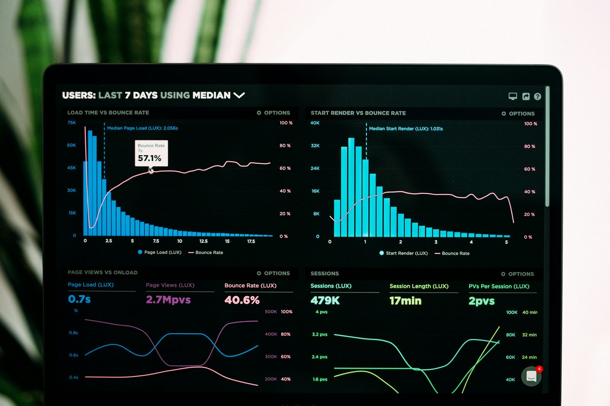

Análise de Turnover e Retenção em Empresa de Tecnologia
Estudo analítico focado nos fatores associados à rotatividade de colaboradores em uma empresa de tecnologia, mapeando padrões comportamentais e organizacionais para orientar o RH no redesenho das políticas de retenção.
O problema
A saída contínua de talentos gera altos custos diretos (seleção e onboarding) e indiretos (perda de produtividade). A pergunta central: quais fatores organizacionais precisam mudar para reduzir a perda de colaboradores?
Solução técnica
- Limpeza da base histórica de RH — 1.470 colaboradores e 19 variáveis
- Análise exploratória univariada (taxa de turnover, distribuições, box-plots)
- Análise bidimensional entre turnover e fatores como renda, idade, satisfação e equilíbrio vida/trabalho
Resultados
- Grupos de maior risco de evasão identificados (faixa salarial, tempo de casa, clima e gestão)
- Insights acionáveis entregues ao RH com propostas de mudança cultural
- Plano direcionado para redução da rotatividade
PythonPandasNumPy
SeabornMatplotlibPeople Analytics